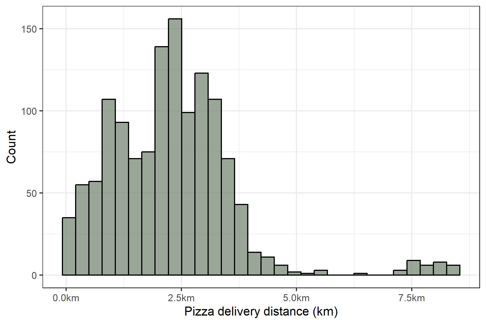
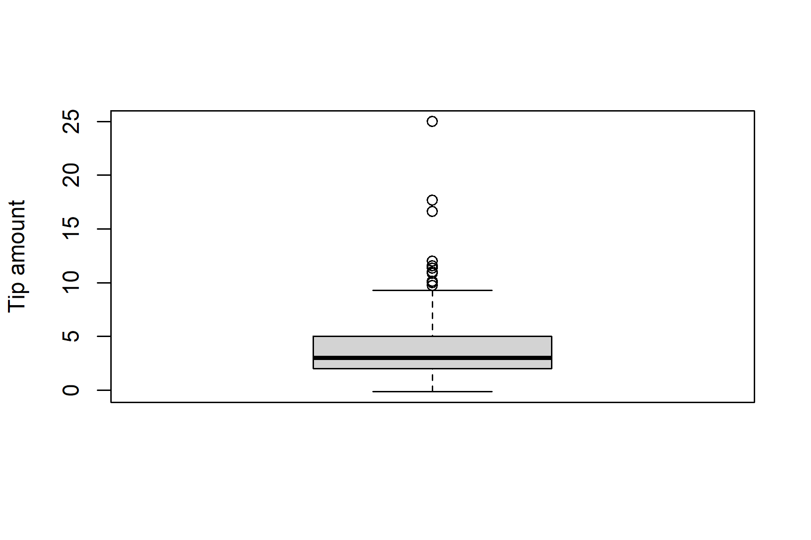
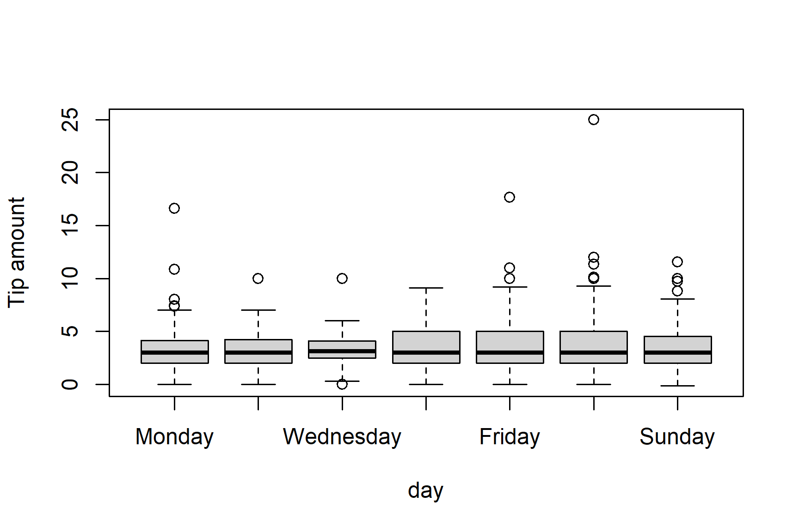

| Variable | Description |
|---|---|
| Day | Day of the week on which the delivery was made |
| Distance | Distance between the pizza restaurant and delivery location, in km |
| Order amount | Value of the pizza order |
| Tip | Tip left by the customer |
ST201 · DATA ANALYSIS
Practice Questions Sheet 1
ST201 - Data Analysis
This tutorial introduces some basic ways of describing and visualising data in R. Please attempt all questions before your tutorial You should work through the questions in a new R script.
For questions asking you to interpret a result, aim for one or two clear sentences. You should use the context of the pizza delivery data when explaining your answers.
ImportantPlease complete this assignment before the tutorial on the week of 12th October
TipGetting help
If you are unsure what a function does, remember that you can use R’s help system:
?mean
You can also use the Help pane in RStudio.
Pizza delivery data
We will use a dataset containing information about 1,301 pizza deliveries.
The dataset contains four variables:
The dataset is available on the RStudio server in the ST201 data folder.
You can load it by opening a new R script and running the following code:
# Load the pizza dataset
pizza <- readRDS("Sharedfiles/ST201/data/pizza_del.rds")Once you have loaded the data, you can look at the first few observations using:
# Examine the first 6 rows of the pizza dataset
head(pizza)Exercise 1
- How many observations are in the dataset?
- How many variables are in the dataset?
- Which variables are categorical and which are numerical?
Individual observations
Let’s start by looking at the distance variable.
Copy and run the below code
pizza$distance[1:10]This displays the first 10 observations of distance.
TipRemember that R uses square brackets
[] to select observations.
For example
# The first observation
pizza$distance[1]selects the first observation, while
# The tenth observation
pizza$distance[10]selects the tenth observation.
Exercise 2
- What is the value of the 275th observation of
distance? - What does this value represent in the context of the dataset?
- What is the distance for the 1,000th observation?
Measuring the centre of the data
Suppose the owner of the pizza restaurant wants to know the typical delivery distance.
One way to describe the centre of a numerical variable is using the mean.
In Figure 1, we can see the full distribution of the pizza delivery distance variable.

To start off, copy and run the below code
mean(pizza$distance)Exercise 3
- What is the mean delivery distance?
- Modify the above code and calculate the median delivery distance?
- Write one or two short sentences comparing the mean and median and then in the context of the data, compare the two values (are they similar, or noticeably different)
Quantiles
The mean and median tell us something about the centre of the data.
We can also use quantiles to describe where observations fall within the distribution.
Run the below code
quantile(pizza$ditance, )
WarningAha!! You should get an warning
Exercise 4
- Modify the above code to correctly calculate the 25th percentile
- Following this, calculate the 75th percentile
- Provide a short interpretation of these two quantiles, in the context of the pizza deliveries
Measuring variance
So far, we’ve been exploring the centre of distance. Let’s zoom out a little and look at the spread of our variable
Exercise 5
- Calculate the variance of the
distancevariable - Now, calculate the standard deviation of the
distancevariable - In general terms, what is the difference between the term variance and the term standard deviation
- What is the range of the
distancevariable
Visualising data
Figure 2 is a box plot of the pizza tips variable

Exercise 6
- Write
Rcode to produce the above plot (remember to add in the y label) - Provide a short overview of what the boxplot is telling us (what is the median of the
tipvariable, what is the range, are there any outliers, et.) - Modify the
Rcode you just wrote to produce a histogram of thetipvariable
Comparing delivery days
So far, we have been examining the data across all deliveries.
However, we can actually split this data up a little and look at each separate day (with the use of the day variable).
Suppose the restaurant owner wants to know whether customers spend different amounts on different days of the week.
Run the below code
# Create a dataset only with pizza deliveries on a Saturday
sat_pizza <- pizza[pizza$day == "Saturday", ]
head(sat_del)
TipThis creates a new dataset containing Saturday deliveries only.
Exercise 7
- Using the new dataset, calculate the mean
order_amountfor Saturday deliveries. - Create a dataset containing Monday deliveries only.
- Calculate the mean
order_amountfor Monday deliveries. - Which day has the larger mean order amount?
NoteBonus question
Creating a bunch of new datasets with different delivery days can be quite inefficient and tedious.
Imagine doing it 7 times and running seven different analyses!
Instead, a neat thing we can do is compare all the deliveries at once
Copy and paste the below code which outputs Figure 3
boxplot(tip ~ day, data = pizza, ylab = "Tip amount")
The ~ tells R to “Plot tips separately for each value of day”.
- Which day appears to have the lowest variation in tips?
- Are there any potential outliers?